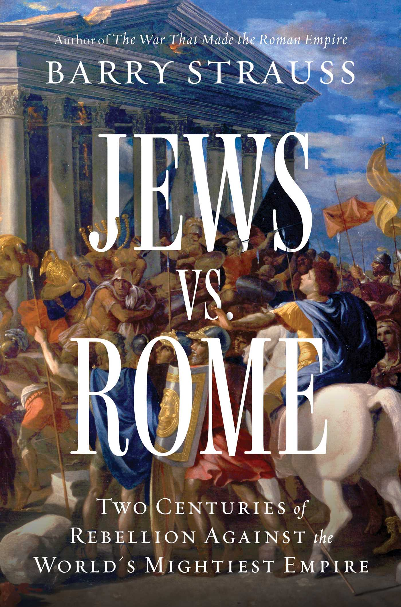
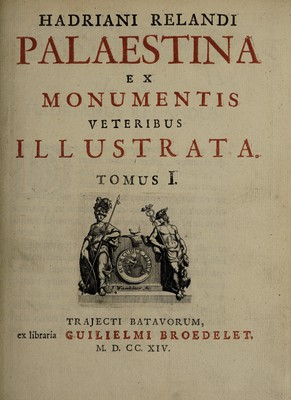
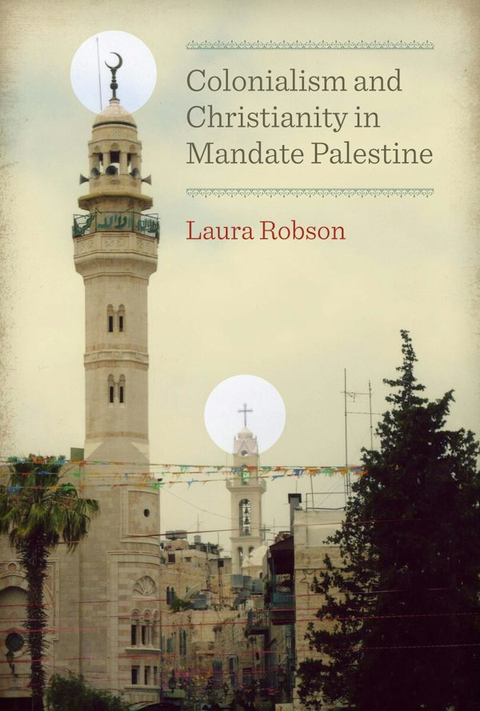
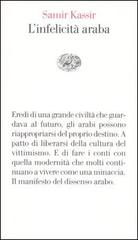

20:55 · 6 OPERE
Il tempo degli ubriachi.
Il filo del discorso
Un aneddoto attribuito a Rossini sulla novità e sulla bellezza apre una polemica sul rapporto fra linguaggio, memoria storica e ideologia. Dr Divago propone una propria ricostruzione dell’uso del nome Palestina e della formazione delle identità nazionali, collegandola ai conflitti contemporanei e alla Guerra fredda. I riferimenti a Strauss, Reland e Robson accompagnano il passaggio dall’epoca romana al mandato britannico. La discussione di Kassir e di un articolo attribuito a Michele Sisto introduce la critica delle interpretazioni coloniali di Israele. Orwell offre poi un’immagine del meccanismo del nemico pubblico. Il finale presenta la lotta contro l’antisemitismo come una responsabilità morale e contesta le rappresentazioni correnti della guerra.
I libri nel discorso

Qoèlet (Ecclesiaste)
Note sul riferimento
Copertina: Adelphi, Biblioteca Adelphi 414, 2001
Edizione autonoma del libro biblico, versione e commenti di Guido Ceronetti. Non è una copertina della Bibbia integrale né un’edizione confermata nel video.
Qohelet è richiamato attraverso la formula sulla mancanza di novità sotto il sole.

Jews vs. Rome. Two Centuries of Rebellion Against the World’s Mightiest Empire
Note sul riferimento
Copertina: Simon & Schuster · hardcover · 2025
Immagine autentica dell’opera, controllata visivamente; non identifica l’edizione usata nel video.
Barry Strauss, Jews vs. Rome e il sottotitolo sono annunciati esplicitamente.

Palaestina ex monumentis veteribus illustrata
Note sul riferimento
Frontespizio: Frontespizio del tomo I · Utrecht, Guilielmus Broedelet · 1714
Frontespizio del tomo I dell’edizione di Utrecht del 1714, identificato nella scansione Wellcome, pagina 9. La rilegatura antica dell’esemplare non reca il titolo: non viene presentata come una copertina editoriale illustrata. Nessun ISBN è attribuito al volume settecentesco.
Adriaan Reland, il titolo latino e l’anno 1714 sono annunciati nella discussione del nome Palestina.

Colonialism and Christianity in Mandate Palestine
Note sul riferimento
Copertina: University of Texas Press · EPUB · 2011
Copertina ufficiale dell’edizione digitale EPUB in inglese del 2011. Il titolo italiano è soltanto una traduzione orale nel video; non indica un’edizione italiana verificata.
Laura Robson, il titolo tradotto oralmente, l’editore e l’anno sono annunciati.

L’infelicità araba
Note sul riferimento
Copertina: Einaudi · Vele 19 · 2006
Immagine autentica dell’opera, controllata visivamente; non identifica l’edizione usata nel video.
Samir Kassir e L’infelicità araba sono nominati prima della citazione criticata dal relatore.

1984
Note sul riferimento
Copertina: Newton Compton · edizione illustrativa
Orwell, 1984, i due minuti d’odio e il personaggio Goldstein sono richiamati esplicitamente.